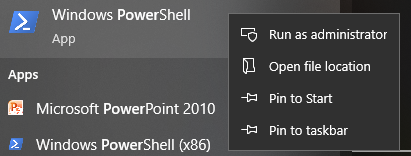
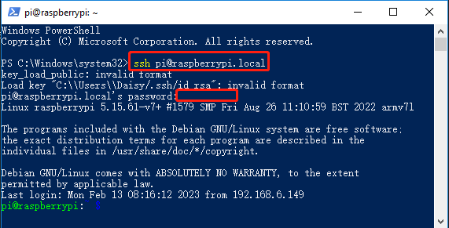

注釈
こんにちは、SunFounderのRaspberry Pi & Arduino & ESP32愛好家コミュニティへようこそ！Facebook上でRaspberry Pi、Arduino、ESP32についてもっと深く掘り下げ、他の愛好家と交流しましょう。
参加する理由は？
エキスパートサポート：コミュニティやチームの助けを借りて、販売後の問題や技術的な課題を解決します。
学び＆共有：ヒントやチュートリアルを交換してスキルを向上させましょう。
独占的なプレビュー：新製品の発表や先行プレビューに早期アクセスしましょう。
特別割引：最新製品の独占割引をお楽しみください。
祭りのプロモーションとギフト：ギフトや祝日のプロモーションに参加しましょう。
👉 私たちと一緒に探索し、創造する準備はできていますか？[ここ]をクリックして今すぐ参加しましょう！
PowerShellでOpenSSHをインストール
ssh <username>@<hostname>.local``（または ``ssh <username>@<IP address>）を使用してRaspberry Piに接続しようとした際、次のエラーメッセージが表示される場合があります。
ssh: The term 'ssh' is not recognized as the name of a cmdlet, function, script file, or operable program. Check the spelling of the name, or if a path was included, verify that the path is correct and try again.
これは、お使いのコンピューターが古いために OpenSSH がプリインストールされていないことを意味しています。以下の手順に従って手動でインストールしてください。
Windowsデスクトップの検索ボックスに
powershellと入力し、表示されるWindows PowerShellを右クリックして、メニューから管理者として実行を選択します。以下のコマンドを使用して
OpenSSH.Clientをインストールします。Add-WindowsCapability -Online -Name OpenSSH.Client~~~~0.0.1.0
インストールが完了すると、次の出力が表示されます。
Path : Online : True RestartNeeded : False
次のコマンドを使ってインストールを確認します。
Get-WindowsCapability -Online | Where-Object Name -like 'OpenSSH*'
これで
OpenSSH.Clientが正常にインストールされたことが確認できます。Name : OpenSSH.Client~~~~0.0.1.0 State : Installed Name : OpenSSH.Server~~~~0.0.1.0 State : NotPresent
警告
上記のプロンプトが表示されない場合、お使いのWindowsシステムがさらに古い可能性があります。この場合、 PuTTY のようなサードパーティのSSHツールをインストールすることをお勧めします。
PowerShellを再起動し、再度管理者として実行します。この時点で
sshコマンドを使用してRaspberry Piにログインできるようになり、設定したパスワードを入力するよう求められます。